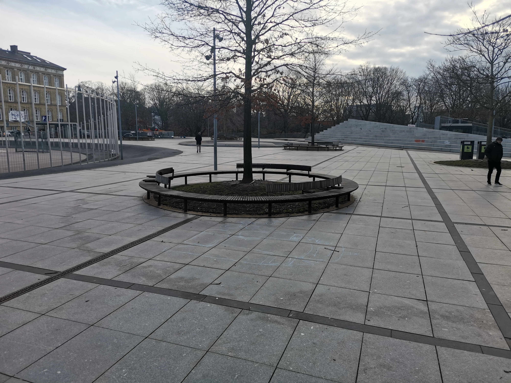

Creative Benches or Dark Design
Written by Sif Høg, 28/02/2024
I have been planning on writing a post on an example of dark design in my own city, and yesterday I went out to take a picture of an example of dark design. It was a classic example of a dark design bench: a bench with obstacles that make it unusable for homeless people looking for a slightly less uncomfortable place than the ground to sleep at night. These kinds of benches are usually designed with impractical shapes and sculptures disguised as artsy.
Last year, I went on a city walk in Copenhagen, where I was made aware of the benches at Israel's Square near Nørreport; they were designed with armrests and shapes arching into accessibility. So it was natural for me to go there to take pictures for my blog post yesterday.
But when I got there and looked at the benches, I was not convinced about their inaccessibility. Looking at the benches I could indeed see that they were round, and they did have armrests uncomfortable to lie on, but my inner scepticism insisted on asking: Is there not enough space for an adult person to lie on the area without armrests? And are they actually so curved that the benches are uncomfortable to lie on? I decided to try and lie on one of the benches, and from this ad hoc test, they did not feel any less convenient than other benches for lying on. I would even say the armrests were at a comfortable height and if I covered them in something soft, they could serve as pillows.
I do not want to neglect the issues with dark design, nor that this bench might have proved to have issues, if I actually attempted to sleep on it overnight. I know Copenhagen sadly has plenty of examples of dark design around, and the purpose of this blog post is not to argue that might be wrong.
This experience yesterday showed me the importance of research and critical thinking. Having a blog where I share my knowledge allows me to put what I think I know to the test.
When I plan to write a blog post, my research often forces me to consider holes and weaknesses in my knowledge, leading me in a new direction. This gives me the opportunity to explore and write about what I have learned from this shift.
I am still planning on writing about inaccessible benches. I know some other ones with sculptures on them, making them undoubtedly unusable for sleeping.
Here is the picture I got of the benches. Feel free to make your own judgement of them.
